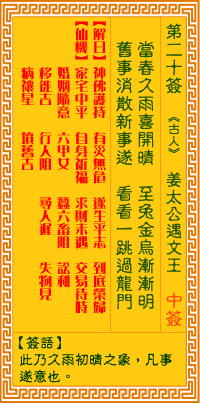

观音灵签第二十签 【姜太公遇文王】 |
 | |||
当春久雨喜初晴 玉兔金乌渐渐明 旧事已成新事遂 看看一跳入蓬瀛 |
||||
| 【吉凶】 | 上上签 | 【宫位】 | 辰宫 | |
| 【签语】 | 此卦久雨初晴之象，凡事遂意也。 | |||
| 【解曰】 | 神佛扶持 有灾无危 遂生平志 到底荣归 | |||
| 【仙机】 | 此签家宅中平，自身祈福，求财未遇，交易待时，婚姻随意，六甲女，田蚕六畜阻，讼和，行人阻，寻人迟，失物见，移徙吉，病禳星， 坟旧吉。 | |||
| 【详解】 | 春天下了好久的雨终于止歇，月亮与太阳也因云雾散去而渐渐恢复了光明;想做的事情慢慢也会达到目的，很快地便可以跳入新的格局境界了。 佛神护佑，百事无虚，想平生事，到底胜初。此签久雨初晴之象，凡事亨通。 本签者也。久雨初晴之象。为万事可成之兆。惟得此吉签。必须早植因缘。之后当有莫大利益。君尔在交友之中。宜留意者。必须选中之一为贵人。彼将成王公封爵之贵。将有大成之日。汝必能攀附上。易言之。佛神护佑百事无忧想平生事到底胜初者。 此签有”苦尽甘来”之意。鼓励当事人，坚持到底。一般人对不熟悉的事物，总是会感到陌生而惧怕。须知会成功的人，本身一定有过人的毅力，与百折不挠的精神。当我们在羡慕别人有一番成就的时候，千万也别忘了其背后所付出的心血与努力。 俗云：”一回生，二回熟”。凡事只要下定决心，就应坚持到底，藉由不断的摸索与尝试，从错误与失败中汲取教训、累积经验，日久必能得心应手、游刃有余。因此勿畏难怕苦，须知现在所做的一切，都有可能关系到将来。 | |||
| 【典故】 | 封神榜故事。姜太公（子牙）已年近八十岁，这时，他在胃水旁垂钓，等待时机，周文王夜梦飞熊，在有贤人出现，于是亲身到胃水来访 姜太公，并礼聘他辅佐治理国家，封他为‘丞相’之职。后周文王得天下八百余年，是为《周朝》。 | |||